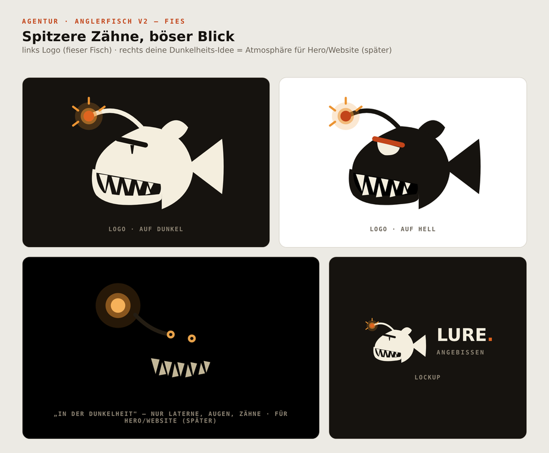
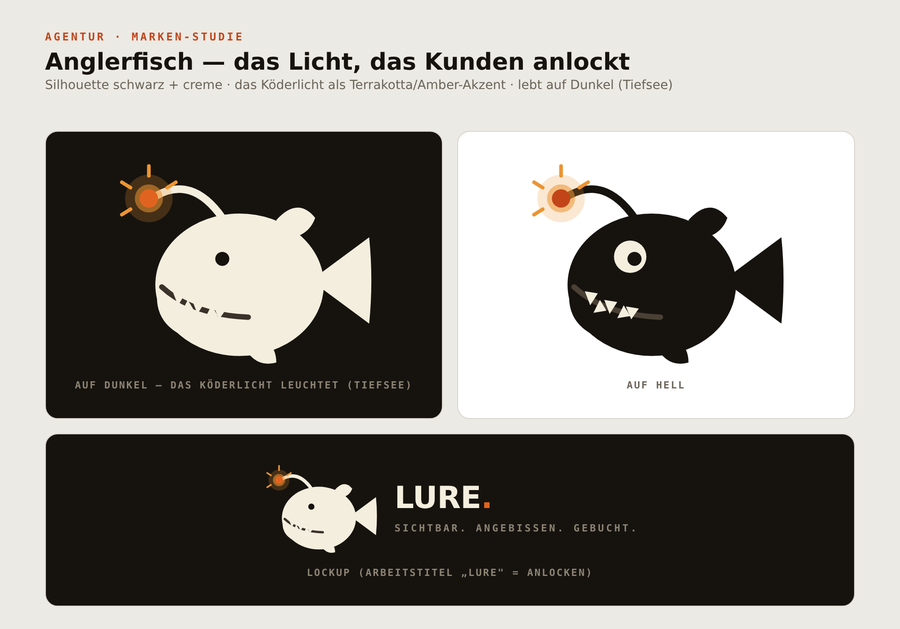
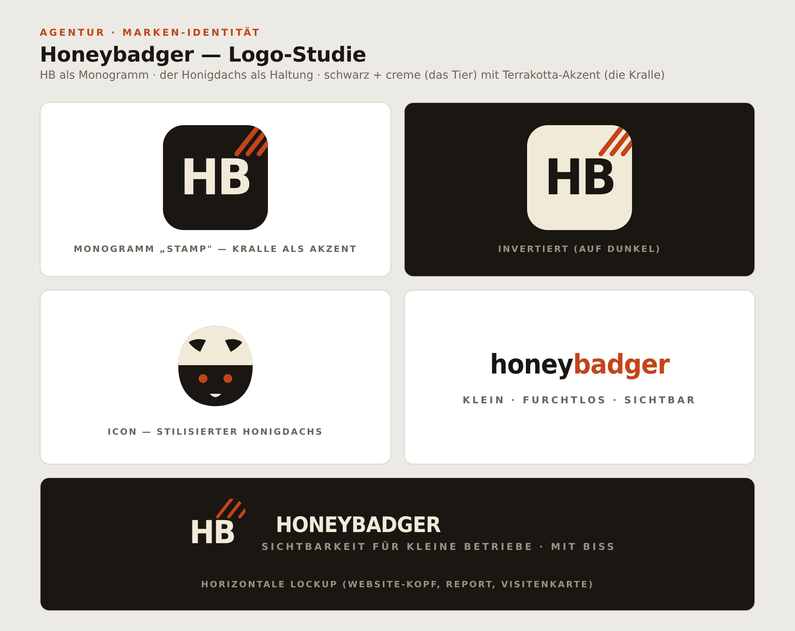
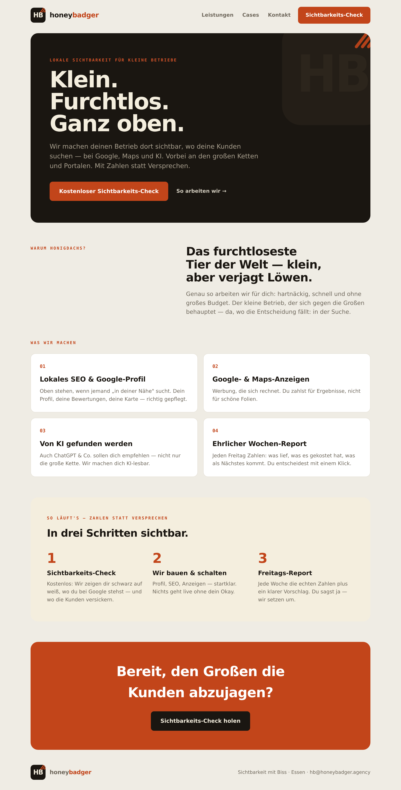

Agentur · Marken-Studien
Logo-Studien
Stand 17. Juli 2026 · einfach anschauen, kein Download.
🎣 Anglerfisch v2 — fies (aktueller Stand)

🎣 Anglerfisch v1 — erste Studie

🦡 Honeybadger — HB-Monogramm

Marke im Einsatz — One-Pager
